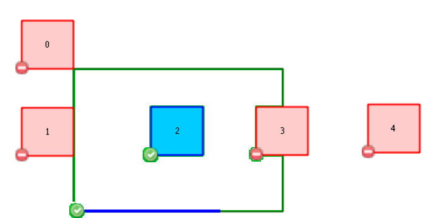

Geometries of origin layer must be covered by at least one geometry of destination layer. This rule is more inclusive than Layer must be contained by one geometry, because it consideers too geometries contained in a geometry boundary (for example, a line in a polygon shell, or a point in a linestring node).
